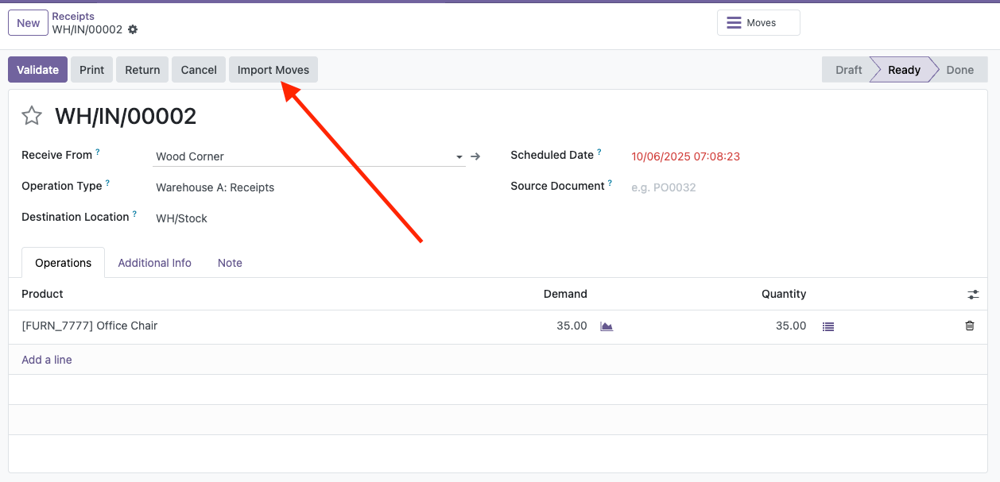
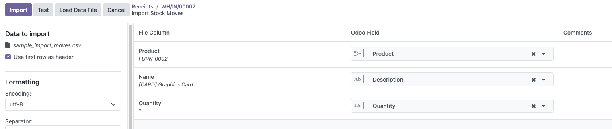
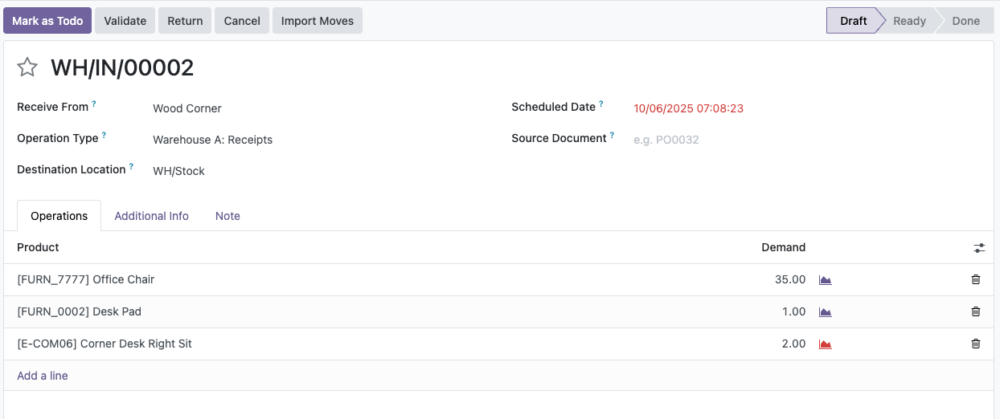

Use Odoo's built-in import to add stock moves from a CSV or XLSX file.
Button Import at Stock picking

Import wizard showing the file upload and column mapping for stock.move.

Stock picking after importing lines from a file.

See tests/sample_import_moves.csv inside this module for a ready-to-use template.